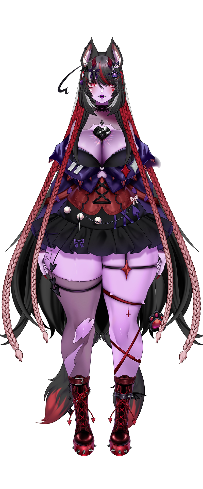

País:
Puerto Rico pero vivo en Argentina
Cumpleaños:
20 de Enero
Altura:
1,55 m
Comida favorita:
Arroz
Comida que detestas:
Pizza,Pan y Lasagna
Videojuego favorito:
Baldur's Gate 3
Serie favorita:
No tengo
Gustos musicales:
No tengo
Anime
favorito:
favorito:
Violet Evergarden
The darling in the franxx
The darling in the franxx
Animal favorito:
Zorro,Perros,Panda,Roedores
Color favorito:
Morado
Modelo:
PROYECTO AR-AI.I(artista y rigger)
Hashtag:
#Esferart